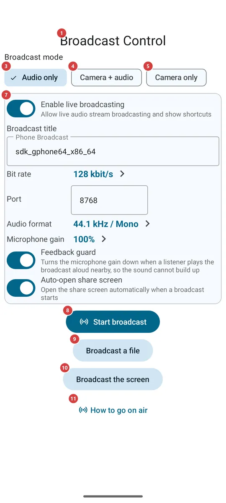
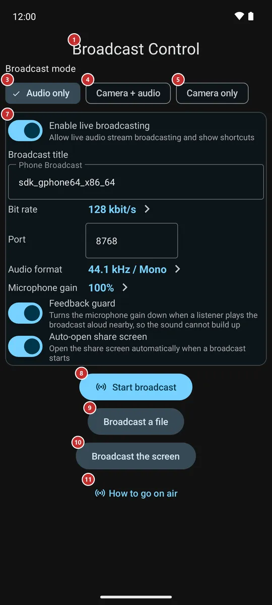

Broadcast control
What this is for
Broadcast control is where you go on air from your phone: send your microphone, your camera, a ready audio or video file or the whole screen to other people, then hand them the link, the QR code or a file so that they can watch and listen. The same screen shows how many are connected and ends the broadcast.


In this order
- Open Live Broadcast from the programs menu, the programs panel, a Quick Settings tile or a home-screen widget. If it is not offered there, switch it on first in Settings, on the Media tab, in the Broadcast group. The screen 1 opens with Audio only chosen and stays awake while it is open.
- Choose what to send: sound only 3, the camera with sound 4 or the camera alone 5. A camera mode shows the camera picture 2 and, when the phone has several cameras, the list of cameras 6 to pick from.
- Adjust the title, the port and the sound quality in the settings card 7 if you need to, then press Start broadcast 8. The first start asks for the microphone, the camera and notifications - allow what the message names.
- To send something other than the camera and the microphone, press Broadcast a file 9 and pick an audio or video file, or Broadcast the screen 10 and confirm the system question about showing the screen.
- While you are on air, the number of listeners 12 is shown at the top. Switch the camera 14 and the microphone 15 off and on, change the camera 16, let the screen go to sleep 17 or light the scene (18, 19). Press Stop broadcast 22 when you are done.
- Give the viewers the broadcast: show the QR code 23, copy the link 27, send it on 29 or save it as a file 28. A protected broadcast also shows a password 25, which you tell separately.
- Cast to my devices 21 and Send to watch 20 hand the live broadcast to your own other devices, and Guests 30 gives it to another account. The guide buttons (11, 31, 32) open pages on the site.
The elements
Before the broadcast
1Broadcast ControlThe name of the screen, which has two states: before the broadcast and on air.
Before the broadcast the screen shows what to send and the settings. On air it shows the live controls and the ways to share. A block that does not apply at the moment is hidden, not greyed out. The screen is kept awake while it is open, until you let it go to sleep (17).
2Camera pictureWhat your camera sees and, on air, what is being sent.
Before the start it lets you choose a camera by what it shows. It appears when a camera mode is chosen and the camera is allowed; if you refuse the camera, the area stays empty and the screen asks only once per visit. On air it shows the picture that goes out. It is hidden for sound only and for a file or screen broadcast, which do not use the camera. Turn the phone on its side during a camera broadcast and the picture fills the whole screen; tap it to bring the controls back beside it, and tap again to hide them.
3Audio onlySends only the sound of the microphone.
The default mode. It needs the microphone only. You can pick another mode on air too: the broadcast is then reopened in that mode, and viewers reopen the stream by the updated link or QR code.
4Camera + audioSends the picture of the camera together with the sound.
Needs the camera and the microphone. On air the camera and the microphone can be switched off one by one (14, 15).
5Camera onlySends the picture of the camera without sound.
Needs the camera. In some editions Android also asks for the microphone, although no sound is sent.
6CameraChooses which camera of the phone sends the picture.
One button per camera the phone offers: back, front or external. They appear with a camera mode, once the phone has listed its cameras. On air a tap changes the camera at once. The choice is remembered for the next time.
7Broadcast settingsThe options of the broadcast, kept next to the Start button.
The card holds the same options as the Broadcast group of the Media settings: whether live broadcasting is on, the title of your broadcast, the bit rate, the port, the audio format, the microphone gain, the feedback guard and whether this screen opens by itself when a broadcast starts. Changes are saved at once, and a title or port you have just typed is used by the broadcast you start next. The card is hidden on air, because the settings of a running broadcast cannot change.
8Start broadcastGoes on air in the chosen mode.
If the broadcast needs an access the phone has not given yet - the microphone, the camera or notifications - the system asks first, and a message names what is missing if you refuse. If the broadcast cannot start, for example because the phone cannot open the port, a message says why and the screen stays as it was. Once you are on air, the button gives way to the live controls and the sharing block.
9Broadcast a fileBroadcasts a ready audio or video file instead of the microphone and the camera.
Opens the system file picker for audio and video files. The picked file is played out as a live broadcast, without the microphone or the camera, so the controls for them are not shown. A file that does not open or has nothing to play is refused with a message. The button is shown only before you start, and only in editions that can broadcast.
10Broadcast the screenBroadcasts what is shown on the screen of the phone.
The system asks for confirmation every time. The permission is for one broadcast only and is never kept. If you decline, nothing starts. During a screen broadcast the buttons for the camera, the microphone and the screen are not shown, because blanking the app would blank what the viewers see.
11How to go on airOpens the guide to going on air on the site.
Shown before the broadcast starts. The page opens in your browser, so it needs the internet; nothing changes in the app.
While you are on air
12Listener countHow many devices are connected to your broadcast right now.
The number appears only while you are on air and follows people connecting and leaving.
33Exchange server lineWhere your broadcast stands on your exchange server.
Shown only while you are on air. Every broadcast goes to your outgoing exchange server by itself from its first second: the line names the server and says that the broadcast is being announced, is on the server, or is on the server and relayed through it. When something goes wrong, the line says what happened and what to try; tap it for the details with the code. The broadcast on this network carries on either way. With no exchange server, the line says the broadcast is reachable on this network only, and a tap opens My devices to add one; a guest account cannot broadcast through the server, and the line says so.
13Feedback warningTells you why the sound got quieter: a listener's speaker is feeding back into your microphone.
It shows in red only when the Feedback guard has turned the microphone down. That happens when someone plays your broadcast aloud next to the microphone and the sound would build up into a squeal. Move that device away or lower its volume, and the warning goes. The guard is an option of the Broadcast settings.
14Camera on and offTurns the picture off and on without ending the broadcast.
Shown for broadcasts with the camera. The button says whether the camera is on or off at the moment. With the camera off, viewers see a black picture and the sound goes on.
15Microphone on and offMutes and unmutes the sound.
Shown only for Camera + audio. The button says whether the microphone is on or off at the moment. With it off, viewers see the picture without sound.
16Switch CameraChanges which camera sends the picture.
Opens a list of every camera the phone offers, not only the front and the back one; tap a camera to switch at once. The choice is remembered for the next broadcast.
17Screen offLets the screen go to sleep while the broadcast goes on.
Where the camera can keep working in the background, and for sound only, the button stops keeping the screen awake, so the display sleeps after the usual time. In editions where the camera works only while the app is visible, the button is called Blank screen: it covers the app with a black screen and a dim clock while the display stays on. Tap the black screen or press Back to return. It is not shown for file and screen broadcasts.
18FlashlightLights the scene with the flash of the camera.
Shown only when the camera on air has a flash and is switched on; a front camera usually has none. The button says whether the flashlight is on or off.
19Bright frameLights your face with a bright white frame around the screen.
A white border over the edges of the screen, with the brightness of this window raised - useful when you film yourself in the dark. The preview, the buttons and the QR code stay usable under it. Only the brightness of this window rises, never the brightness setting of the phone. The frame goes out when the broadcast ends or the camera stops. Shown for broadcasts with the camera of the phone.
20Send to watchPlays this live broadcast on the paired watch.
Shown on air, when the watch companion is switched on and the phone supports it. It sends the broadcast to the watch and opens it there. A message tells you when the watch is not reachable or does not answer.
21Cast to my devicesAsks your other devices to play this broadcast.
Shown on air, while the broadcast travels through your exchange server (see My devices). The button opens the list Play on with your devices that can play it, each marked online or offline; tick one or more and press Cast to my devices. Each device receives a request it can accept or decline, and a message tells you which one is playing or why it refused.
22Stop BroadcastEnds the broadcast.
The listeners are disconnected, the camera and the microphone are released, and the screen returns to the state before the start, with the settings card back. The notification of the broadcast has its own Stop button.
Sharing the broadcast
23Broadcast Descriptor QR CodeA QR code that hands the broadcast to a device nearby.
The other device scans it to add the broadcast: in Streams, open the menu and choose Import stream (QR / file). Tap the code to show it across the full screen, so that it can be scanned from across the room; tap again or press Back to return. When the mode changes on air, the code is replaced, also when it is open. The code never carries the password.
24Broadcast linkThe address your broadcast is served at.
The text can be selected. The address works for devices that can reach your phone over the network. Copy link (27) copies it, and Send (29) passes on a link that opens the broadcast in the app, built from the same data as the QR code.
25Link passwordThe password of a protected broadcast, told apart from the link.
Shown while the broadcast goes out through an exchange server: the password, or "Password: none" when you chose to broadcast without one. Neither the link, the file nor the QR code carries it, so you give it to the person separately, by voice or in another message.
26Change passwordChooses how the link is protected: automatic, no password or your own.
Automatic makes the password for you, and Generate new replaces it when it has reached someone who should not have it. No password lets anyone who has the link open the broadcast. My own takes any password you type, up to 64 characters; a short one gets a reminder that it is easy to guess. The change applies at once: the old password stops opening the link, and the devices of your account and your guests keep playing. The same choice is in the broadcast settings, under Link password, and it is remembered for the next broadcast. Your own password stays on this phone only and never goes into a backup.
27Copy LinkCopies the link of the broadcast.
A message confirms the copy. A broadcast that goes out through an exchange server is copied as the full link instead of the bare address, so that the other device can open it and asks for the password when there is one.
28Export FileSaves the broadcast as a small file you can pass on.
The system asks where to save it. Someone who receives the file adds the broadcast with Import stream (QR / file) in Streams. A message tells you whether the file was saved.
29Send toSends the link through any app you choose.
Opens the system list of apps and contacts. The link opens the broadcast in FastMediaSorter on the other device; where the app is not installed, it opens a page on the site instead.
30GuestsGives the live broadcast to another account of your exchange server.
Shown only for a protected broadcast announced through the exchange server by a member account. The dialog Give the broadcast to a guest takes the guest's login (3 to 64 letters, digits, dots, dashes or underscores) with Give, and lists everyone who has it with the answer of the server - waiting, given or refused. Withdraw takes the broadcast from one guest alone.
31How to watch thisOpens the page you can forward to whoever receives the broadcast.
The page explains how to watch with the link, the QR code or the file. It opens in the browser and needs the internet.
32How broadcasting works between devicesOpens the page about how broadcasting works between devices.
A page on the site, opened in the browser. It needs the internet and changes nothing in the app.